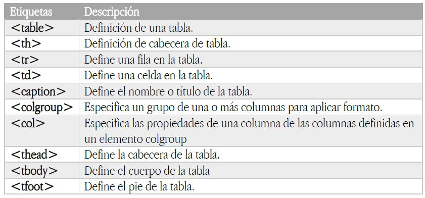

Permite definir tablas. Una tabla es una cuadricula de casillas o celdas, divididas en filas y columnas. Las tablas para componerlas se hace uso de otras etiquetas, las cuales no tienen sentido sino están situadas dentro de una etiqueta de tabla. Estas etiquetas son las siguientes.
Definición de una tabla sencilla: Para crear una tabla sencilla se ha de utilizar en primer lugar la etiqueta table, la cual define la tabla. Y dentro de ella se han de situar por cada fila una etiqueta tr, mientras que por cada casilla o celda dentro de la fila, se puede utilizar una etiqueta th o td, dependiendo de que sea una casilla de cabecera o normal. Aunque en versiones anteriores de HTML, se pueden aplicar varios atributos a la etiqueta table, actualmente solo está permitido uno, el atributo border, al cual se le puede dar un valor de 0 o 1.
| Fila 1 / Columna 1 | Fila 1 / Columna 2 | Fila 1 / Columna 3 |
|---|---|---|
| Fila 2 / Columna 1 | Fila 2 / Columna 2 | Fila 2 / Columna 3 |
| Fila 3 / Columna 1 | Fila 3 / Columna 2 | Fila 3 / Columna 3 |
Uno de los atributos que se pueden aplicar a las etiquetas de celda, independientemente que sean de encabezado o normales. Es el atributo colspan, el cual permite realizar la combinación de varias columnas en una sola. Para especificar el valor del atributo, se ha de indicar el número de columnas sobre las que se quiere realizar la combinación, utilizando un valor numérico encerrado entre comillas dobles.
| fila 1 / columnas 1 - 2 | fila 1 / columna 3 | fila 1 / columnas 4 - 5 | ||
|---|---|---|---|---|
| fila 2 / columna 1 | fila 2 / columna 2 | fila 2 / columna 3 | fila 2 / columna 4 | fila 2 / columna 5 |
| fila 3 / columna 1 | fila 3 / columna 2 | fila 3 / columnas 3 - 4 - 5 | ||
Al igual que se puede realizar la combinación de columnas, también se puede realizar la combinación de filas, mediante el atributo rowspan.
| fila 1 - 2 - 3 / columna 1 | fila 1 / columna 2 | fila 1 / columna 3 |
|---|---|---|
| fila 2 / columna 2 | fila 2 / columna 3 | |
| fila 3 / columna 2 | fila 3 - 4 / columna 3 | |
| fila 4 / columna 1 | fila 4 / columna 2 |
Se pueden combinar de manera simultanea filas y columnas si es necesario.
En muchas ocasiones se puede necesitar tablas que tengan una mayor complejidad en su estructuración, debido a que puedan tener secciones de datos distintas, o se quiera realizar diferenciación entre los datos de la tabla y las secciones correspondientes a sus encabezados y pies. Una de las características de estas tablas es que están compuestas por una sección de cabecera, que se define mediante la etiqueta thead, una sección de pie de tabla, definida mediante la etiqueta tfoot, y por ultimo una o varias secciones de cuerpo de tabla, donde se suele ubicar los datos de la misma, representada por la etiqueta tbody.
| Tabla Avanzada | Cabeceras múltiples | |
|---|---|---|
| Primera columna (Fila 2 / Columna 2) | Segunda columna (Fila 2 / Columna 3) | Pie de tabla. |
| Título Fila 1 | Fila 1 / Columna 1 | Fila 1 / Columna2 |
| Título Fila 2 | Fila 2 / Columna 1 | Fila 2 / Columna 2 |